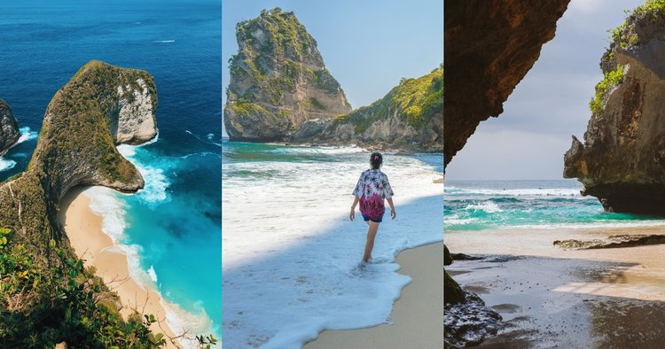
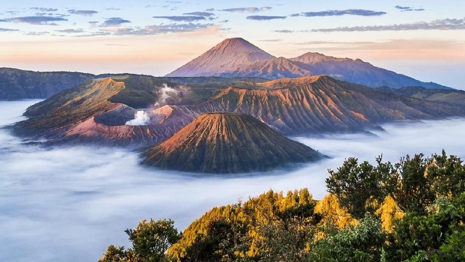

Popular Destination

Pantai Bali
"Pantai Bali menawarkan pasir putih, air jernih, dan pemandangan matahari terbenam yang memukau. Ideal untuk berselancar, snorkeling, dan menikmati kuliner lokal."
Views: 17K
Comments: 3.113
Read More

Gunung Bromo
"Gunung Bromo dikenal dengan pemandangan matahari terbitnya yang menakjubkan dan lautan pasir yang luas, menjadi destinasi favorit bagi pendaki dan pecinta alam."
Views: 11K
Comments: 1.150
Read More

Danau Toba
"Danau Toba, danau vulkanik terbesar di Asia Tenggara, menawarkan pemandangan alam yang tenang dan indah, serta kekayaan budaya Batak yang menarik untuk dijelajahi."
Views: 10K
Comments: 1.451
Read More